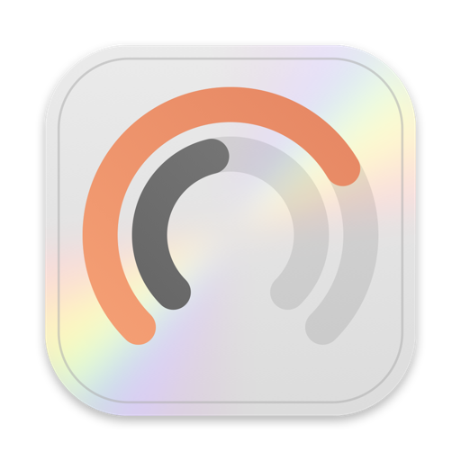

<!doctype html>
<meta charset="utf-8">
<title>Tweet Slides</title>
<script src="logos.js"></script>
<link rel="stylesheet" href="comp.css">
<body>
<div id="root"></div>
<script>
// #en, #tr-dark, #en-dark-tempo: dil, koyu tema, tek sahne
const hp = location.hash.slice(1).split('-'), lang = hp[0] || 'en', dk = hp.includes('dark'), only = hp.slice(1).find(x => x !== 'dark');
if (dk) document.documentElement.classList.add('dk');
</script>
<script src="comp.js"></script>
<script>
const slides = [];
// 01 — Giriş
slides.push({ id: '01-hero', cls: 'dark', html: `
  <div style="position:absolute;inset:0;background:radial-gradient(38% 55% at 72% 52%, rgba(110,92,231,.42), rgba(255,106,61,.14) 55%, transparent 75%)"></div>
  <div style="position:absolute;left:150px;top:0;bottom:0;display:flex;flex-direction:column;justify-content:center;width:600px">
    <div class="eyebrow" style="display:flex;align-items:center;gap:12px">${miniRings(64, 28, 34).replace(/#1d1d1f/g, '#f5f5f7').replace(/rgba\(0,0,0,.18\)/g, 'rgba(255,255,255,.22)')}AI Limit Tracker</div>
    <div class="h" style="font-size:80px;margin-top:16px;background:linear-gradient(180deg,#fff 40%,#b9b9c0);-webkit-background-clip:text;color:transparent">${T('Every AI limit.<br>One glance.', 'Her AI limiti.<br>Tek bakışta.')}</div>
    <div class="sub" style="margin:24px 0 0;font-size:26px;max-width:16em">${T('Claude and Codex usage, right in your Mac’s menu bar. With a heads‑up before you run out.', 'Claude ve Codex kullanımın Mac’inin menü çubuğunda. Dolmadan önce haber verir.')}</div>
  </div>
  <div style="position:absolute;right:170px;top:50%;transform:translateY(-50%);zoom:1.55" id="heroPop">${popup([claudeHot, codex], 'darkbg')}</div>` });
// 03 — Tempo
slides.push({ id: '03-tempo', html: `
  <div class="head"><div class="eyebrow k-purple">${T('Tempo', 'Tempo')}</div><div class="h">${T('Knows when you’ll hit the wall.', 'Ne zaman dolacağını bilir.')}</div>
  <div class="sub">${T('Not just a percentage. A forecast based on how fast you’re going.', 'Sadece yüzde değil: kullanım hızına bakıp tahmin eder.')}</div></div>
  <div class="art" style="top:330px;bottom:90px;gap:100px">
    <div style="zoom:1.6">${card(claudeHot)}</div>
    <div style="display:flex;flex-direction:column;gap:22px;align-items:flex-start">
      <span class="island" style="zoom:1.05">${ring(91, 'red', 28, 4, false)}<b>Claude 91%</b><span>${pace(T('22 min', '22 dakikada'))}</span></span>
      <span class="island" style="zoom:.95;margin-left:30px">${ring(44, 'purple', 28, 4, false).replace('rgba(0,0,0,.11)', 'rgba(255,255,255,.2)')}<b>Codex 44%</b><span>${pace(T('3 hours', '3 saatte'))}</span></span>
    </div></div>${brand}` });
// 04 — Bildirimler
const note = (t, b, time) => `<div class="note"><span class="appicon"></span><div><b>${t}</b><span>${b}</span></div><time>${time}</time></div>`;
slides.push({ id: '04-notifications', html: `
  <div class="head"><div class="eyebrow k-red">${T('Notifications', 'Bildirimler')}</div><div class="h">${T('A heads‑up before it’s too late.', 'Dolmadan önce haber verir.')}</div>
  <div class="sub">${T('At 75% and 90%. And again the moment your limit resets.', '%75’te ve %90’da. Limit yenilendiği an bir kez daha.')}</div></div>
  <div class="art" style="top:330px;bottom:100px"><div class="wall" style="width:1080px;height:100%">${mbar()}
    <div style="position:absolute;right:28px;top:50px;display:flex;flex-direction:column;gap:12px;zoom:1.15">
      ${note(T('Claude · 5 hours 90%', 'Claude · 5 saat %90'), T('You’re very close to the limit. Resets in 1 h 12 m.', 'Limite çok yaklaştın. 1 sa 12 dk sonra sıfırlanır.'), T('now', 'şimdi'))}
      ${note(T('Codex · Weekly 75%', 'Codex · Haftalık %75'), T('You’ve used three quarters of your limit.', 'Limitin dörtte üçünü kullandın.'), T('40m ago', '40 dk'))}
      ${note(T('Claude · Your 5‑hour limit reset', 'Claude · 5 saat limitin yenilendi'), T('Pick up right where you left off.', 'Kaldığın yerden devam edebilirsin.'), '14:36')}
    </div></div></div>${brand}` });
// 05 — Açılınca haber ver
const claudeFull = { logo: 'claude', name: 'Claude', plan: 'PRO', chip: T('Full · opens 19:10', 'Doldu · açılış 19:10'), chipKind: 'hot',
  rings: [{ p: 100, tone: 'red', l: H5, r: tm(1, 48), bell: true }, { p: 58, tone: 'blue', l: WK, r: td(3, 2) }] };
slides.push({ id: '05-remind', cls: 'white', html: `
  <div class="head"><div class="eyebrow k-blue">${T('Reminders', 'Hatırlatma')}</div><div class="h">${T('Get pinged when it’s back.', 'Açılınca haber verir.')}</div>
  <div class="sub">${T('Hit the limit? Right‑click the card. No more reset math in your head.', 'Doldu mu? Karta sağ tıkla. Saat kaçta açılıyordu hesabı bitti.')}</div></div>
  <div class="art" style="top:330px;bottom:90px">
    <div style="zoom:1.55;position:relative;margin-right:190px">${card(claudeFull)}
      <div class="ctx" style="position:absolute;left:500px;top:100px;zoom:.66">
        <div class="hl"><svg viewBox="0 0 24 24"><path d="M6 16V11a6 6 0 0 1 12 0v5l1.5 2h-15ZM10 21h4"/></svg>${T('Notify when 5 hours opens', '5 saat açılınca haber ver')}</div>
        <div><svg viewBox="0 0 24 24"><path d="M6 16V11a6 6 0 0 1 12 0v5l1.5 2h-15ZM10 21h4"/></svg>${T('Notify when Weekly opens', 'Haftalık açılınca haber ver')}</div><hr>
        <div><svg viewBox="0 0 24 24"><path d="M4 20h4L19 9l-4-4L4 16v4Z"/></svg>${T('Name Accounts…', 'Hesapları Adlandır…')}</div></div>
    </div></div>${brand}` });
// 06 — Kartın arkası
slides.push({ id: '06-flip', html: `
  <div class="head"><div class="eyebrow k-orange">${T('Flip it', 'Çevir')}</div><div class="h">${T('Click a card. See everything.', 'Karta tıkla, her şeyi gör.')}</div>
  <div class="sub">${T('Every limit, plus a 13‑week heatmap of your usage.', 'Tüm limitler ve 13 haftalık kullanım ısı haritası.')}</div></div>
  <div class="art static-only" style="top:330px;gap:56px;padding-bottom:40px">
    <div style="zoom:1.35">${card(claudeHot)}</div>
    <svg width="64" height="64" viewBox="0 0 24 24" fill="none" stroke="#86868b" stroke-width="1.6" stroke-linecap="round" stroke-linejoin="round"><path d="M4 12a8 8 0 0 1 14-5.3M20 12a8 8 0 0 1-14 5.3"/><path d="M18 3v4h-4M6 21v-4h4"/></svg>
    <div style="zoom:1.35">${backCard('claude')}</div>
  </div>
  <div class="art vid-only" id="flipStage" style="top:330px;padding-bottom:40px;perspective:2200px">
    <div id="flipFront" style="zoom:1.6;position:absolute">${card(claudeHot)}</div>
    <div id="flipBack" style="zoom:1.6;position:absolute">${backCard('claude')}</div>
  </div>${brand}` });
// 07 — Çoklu hesap
const split = (badge, p1, p2, chip, kind, r1) => ({ logo: 'claude', name: 'Claude', plan: 'PRO', badge, chip, chipKind: kind,
  rings: [{ p: p1, tone: p1 >= 90 ? 'red' : 'blue', l: H5, r: r1 }, { p: p2, tone: 'blue', l: WK, r: td(4, 6) }] });
slides.push({ id: '07-accounts', html: `
  <div class="head"><div class="eyebrow k-green">${T('Multiple accounts', 'Çoklu hesap')}</div><div class="h">${T('Personal and work, side by side.', 'Bireysel ve iş, yan yana.')}</div>
  <div class="sub">${T('One runs out, the other is ready. You always see which.', 'Biri dolunca öbürü hazır. Hangisi boş, hep görürsün.')}</div></div>
  <div class="art" style="top:310px;bottom:70px;gap:60px">
    <div style="zoom:1.3">${popup([split(PERSONAL, 100, 63, T('Full · opens 19:10', 'Doldu · açılış 19:10'), 'hot', tm(1, 48)), split(WORK, 8, 12, T('Available', 'Kullanılabilir'), 'ok', tm(4, 41))])}</div>
  </div>${brand}` });
// 08 — Küçük detaylar
const mbStyles = [
  [T('Recent two', 'Son kullanılan iki'), T('Your last two providers as nested rings', 'En son kullandığın iki sağlayıcı, iç içe halkalar'), miniRings(64, 28, 34)],
  [T('Fullest', 'En dolu'), T('The one closest to its limit, logo inside', 'Limite en yakın sağlayıcı, ortasında logosu'),
    `<span style="display:flex;align-items:center;gap:6px;font:600 15px var(--round);color:#ff3b30">${ring(91, 'red', 32, 4, false)}${T('91% · 22m', '91% · 22dk')}</span>`],
  [T('Side by side', 'Yan yana'), T('Each provider with its own ring and logo', 'Her sağlayıcı kendi halkası ve logosuyla'),
    `<span style="display:flex;gap:10px;align-items:center">${logo('claude', 'width="16" height="16" fill="#e8643c"')}${ring(64, 'red', 26, 3.5, false)}${logo('openai', 'width="16" height="16" fill="#1d1d1f"')}${ring(28, 'blue', 26, 3.5, false)}</span>`],
  [T('Bars', 'Barlar'), T('A slim bar for each provider', 'Her sağlayıcı için ince bir bar'),
    `<span style="display:flex;flex-direction:column;gap:6px;width:70px"><i style="height:6px;border-radius:3px;background:linear-gradient(90deg,#e8643c 64%,rgba(0,0,0,.12) 64%)"></i><i style="height:6px;border-radius:3px;background:linear-gradient(90deg,#1d1d1f 28%,rgba(0,0,0,.12) 28%)"></i></span>`]];
slides.push({ id: '08-details', cls: 'white', html: `
  <div class="head"><div class="eyebrow k-gray">${T('The little things', 'Küçük detaylar')}</div><div class="h">${T('Open it from anywhere.', 'Her yerden aç.')}</div>
  <div class="sub">${T('One shortcut. Four menu bar styles. Light and dark.', 'Tek kısayol. Dört menü çubuğu stili. Açık ve koyu tema.')}</div></div>
  <div class="art" style="top:330px;bottom:60px;gap:140px">
    <div style="display:flex;gap:14px;align-items:center;color:#86868b;font-size:30px;zoom:.85"><div class="key"><b>⌃</b>control</div>+<div class="key"><b>⌥</b>option</div>+<div class="key" style="justify-content:center"><b>L</b></div></div>
    <div style="display:grid;grid-template-columns:repeat(2,230px);gap:16px;zoom:.9">${mbStyles.map(([n, d, pv], i) => `<div class="stylecard ${i === 0 ? 'on' : ''}"><div class="pv"><div style="zoom:1.5;display:flex">${pv}</div></div><div><b>${n}</b><span style="display:block;margin-top:3px">${d}</span></div></div>`).join('')}</div>
  </div>${brand}` });
// 09 — Gizlilik
const check = `<svg width="20" height="20" viewBox="0 0 24 24"><circle cx="12" cy="12" r="11" fill="#34c759"/><path d="M7 12.5l3.2 3L17 9" fill="none" stroke="#fff" stroke-width="2.4" stroke-linecap="round" stroke-linejoin="round"/></svg>`;
slides.push({ id: '09-privacy', html: `
  <div class="head"><div class="eyebrow">${T('Privacy', 'Gizlilik')}</div><div class="h">${T('Sign in once. It stays on your Mac.', 'Bir kez giriş yap. Mac’inde kalır.')}</div></div>
  <div class="art" style="top:250px;flex-direction:column;gap:56px;padding-bottom:30px">
    <div class="list">
      <div class="row"><span class="ic">${logo('claude')}</span><span class="lb">Claude<small>${T('Signed in with your browser', 'Tarayıcınla giriş yapıldı')}</small></span><span class="ok">${check}${T('Connected', 'Bağlı')}</span></div>
      <div class="row"><span class="ic">${logo('openai')}</span><span class="lb">Codex<small>${T('Signed in with your browser', 'Tarayıcınla giriş yapıldı')}</small></span><span class="ok">${check}${T('Connected', 'Bağlı')}</span></div>
    </div>
    <div class="facts">
      <div class="fact"><svg viewBox="0 0 24 24"><circle cx="12" cy="12" r="9"/><path d="M3 12h18M12 3a14 14 0 0 1 0 18M12 3a14 14 0 0 0 0 18"/></svg><b>${T('Your own browser', 'Kendi tarayıcın')}</b><span>${T('Google, Apple, saved passwords. Whatever you already use.', 'Google, Apple, kayıtlı şifreler. Zaten ne kullanıyorsan.')}</span></div>
      <div class="fact"><svg viewBox="0 0 24 24"><rect x="4" y="10" width="16" height="11" rx="2.5"/><path d="M8 10V7a4 4 0 0 1 8 0v3"/></svg><b>${T('Tokens stay local', 'Token’lar yerelde')}</b><span>${T('Saved only on your Mac and refreshed by the app.', 'Sadece Mac’inde saklanır, uygulama kendisi yeniler.')}</span></div>
      <div class="fact"><svg viewBox="0 0 24 24"><path d="M12 3l8 3v6c0 4.5-3.4 8-8 9-4.6-1-8-4.5-8-9V6Z"/><path d="M8.5 12l2.5 2.5 4.5-5"/></svg><b>${T('No middleman', 'Arada kimse yok')}</b><span>${T('Talks only to Anthropic and OpenAI. No analytics.', 'Yalnızca Anthropic ve OpenAI ile konuşur. Analitik yok.')}</span></div>
    </div></div>${brand}` });
// 10 — İndir
slides.push({ id: '10-download', cls: 'dark', html: `
  <div style="position:absolute;inset:0;background:radial-gradient(40% 50% at 50% 30%, rgba(110,92,231,.35), rgba(255,106,61,.1) 55%, transparent 75%)"></div>
  <div style="position:absolute;inset:0;display:flex;flex-direction:column;align-items:center;justify-content:center;text-align:center">
    
    <div class="h" style="margin-top:28px;font-size:72px;background:linear-gradient(180deg,#fff 40%,#b9b9c0);-webkit-background-clip:text;color:transparent">${T('Free for your Mac.', 'Mac’in için ücretsiz.')}</div>
    <div class="sub" style="margin-top:12px;font-size:26px">${T('macOS 14 or later · One‑line install', 'macOS 14 ve üstü · Tek satırla kurulum')}</div>
    <div class="code" style="margin-top:48px"><span><span class="p">$</span> curl -fsSL https://raw.githubusercontent.com/bahadirnuroglu/ai_limit_tracker/main/install.sh | bash</span><button>${T('Copy', 'Kopyala')}</button></div>
    <div style="margin-top:26px;font-size:22px;color:#2997ff">github.com/bahadirnuroglu/ai_limit_tracker ›</div>
  </div>` });

// 00 — Hook videosu (yalnızca video): acı → menü çubuğu → popup → tempo → hesap değiştir → hatırlatma → kapanış
const claudeReel = { logo: 'claude', name: 'Claude', plan: 'PRO', chip: pace(T('1 hour', '1 saatte')), chips: [[PERSONAL, 'on'], [WORK]],
  rings: [{ p: 93, tone: 'red', l: H5, r: tm(1, 12) }, { p: 41, tone: 'blue', l: WK, r: td(3, 17) }] };
const mbarReel = `<div class="mbar" style="background:rgba(255,255,255,.34)"><span></span><b>Terminal</b><span>${T('File', 'Dosya')}</span><span>${T('Edit', 'Düzen')}</span><span>${T('View', 'Görüntü')}</span><span>${T('Window', 'Pencere')}</span>
  <div class="r"><span class="sel" id="rIcon" style="background:transparent">${miniRings(78, 44)}</span>
  <svg width="22" height="12" viewBox="0 0 22 12"><rect x=".5" y=".5" width="18" height="11" rx="3" fill="none" stroke="#1d1d1f" opacity=".5"/><rect x="2" y="2" width="12" height="8" rx="1.6" fill="#1d1d1f"/><rect x="19.5" y="4" width="1.6" height="4" rx=".8" fill="#1d1d1f" opacity=".5"/></svg>
  <span>Wi‑Fi</span><svg width="15" height="15" viewBox="0 0 24 24" fill="none" stroke="#1d1d1f" stroke-width="2.2"><circle cx="10.5" cy="10.5" r="6.5"/><path d="M15.5 15.5 21 21"/></svg><span>${T('Mon 17:12', 'Pzt 17:12')}</span></div></div>`;
const termLine = (a, b = '') => `<div class="tl"><span class="tp">${a}</span>${b}</div>`;
slides.push({ id: '00-reel', cls: 'dark', html: `
  <div id="rDesk" style="position:absolute;inset:0">
    <div class="wall" style="position:absolute;inset:0;border-radius:0"></div>
    <div style="position:absolute;left:0;right:0;top:0;zoom:1.5">${mbarReel}</div>
    <div class="term" id="rTerm"><div class="tb"><i style="background:#ff5f57"></i><i style="background:#febc2e"></i><i style="background:#28c840"></i><span>~/projects/app — claude</span></div>
      <div class="tbody">
        ${termLine('~/projects/app ❯', ' claude')}
        ${termLine('✻', T(' Refactoring the auth middleware…', ' Auth middleware yeniden yazılıyor…'))}
        <div class="tl d">  ⎿ ${T('Updated 6 files (+212 −87)', '6 dosya güncellendi (+212 −87)')}</div>
        ${termLine('✻', T(' Writing integration tests…', ' Entegrasyon testleri yazılıyor…'))}
        <div class="tl d">  ⎿ <span style="color:#30d158">${T('14 passed', '14 başarılı')}</span></div>
        ${termLine('✻', T(' Migrating the billing service…', ' Ödeme servisi taşınıyor…'))}<span class="caret"></span>
      </div></div>
    <div id="rPop" style="position:absolute;top:50px;left:0;zoom:1.4">${popup([claudeReel, codex])}</div>
    <div id="rNote" style="position:absolute;right:26px;top:62px;zoom:1.3">${note(T('Claude · 5 hours is open again', 'Claude · 5 saat açıldı'), T('You asked for a reminder. Pick up where you left off.', 'Hatırlatmanı istemiştin, kaldığın yerden devam edebilirsin.'), T('now', 'şimdi'))}</div>
  </div>
  <div id="rOpen" style="position:absolute;inset:0;background:#000;display:flex;flex-direction:column;align-items:center;justify-content:center;text-align:center">
    <div class="h" style="font-size:96px;line-height:1.08;color:#f5f5f7">${T('Hit your AI limit', 'AI limitine').split(' ').map(w => `<span class="w">${w}</span>`).join(' ')}<br>
      <span style="color:#86868b">${T('in the middle of work?', 'işin ortasında mı takıldın?').split(' ').map(w => `<span class="w">${w}</span>`).join(' ')}</span></div>
    <div id="rPill" style="margin-top:44px;display:inline-flex;align-items:center;gap:12px;padding:14px 24px;border-radius:999px;background:rgba(255,69,58,.14);color:#ff6961;font:500 26px var(--mono);letter-spacing:0;box-shadow:inset 0 0 0 1px rgba(255,69,58,.35)">
      <svg width="24" height="24" viewBox="0 0 24 24" fill="none" stroke="currentColor" stroke-width="2.2" stroke-linecap="round"><path d="M12 3 2 20h20Z"/><path d="M12 10v4M12 17v.5"/></svg>${T('Usage limit reached · resets 3:00 PM', 'Kullanım limiti doldu · 15:00’te sıfırlanır')}</div>
  </div>
  <div id="rEnd" style="position:absolute;inset:0;background:#000;display:flex;flex-direction:column;align-items:center;justify-content:center;text-align:center">
    <div style="position:absolute;inset:0;background:radial-gradient(40% 50% at 50% 40%, rgba(110,92,231,.38), rgba(255,106,61,.12) 55%, transparent 75%)"></div>
    
    <div class="h" style="position:relative;margin-top:26px;font-size:84px;background:linear-gradient(180deg,#fff 40%,#b9b9c0);-webkit-background-clip:text;color:transparent">${T('Every AI limit.<br>One glance.', 'Her AI limiti.<br>Tek bakışta.')}</div>
    <div class="sub" style="position:relative;margin-top:18px;font-size:26px">${T('AI Limit Tracker · Free for macOS', 'AI Limit Tracker · macOS için ücretsiz')}</div>
  </div>` });

const shown = only ? slides.filter(x => x.id.includes(only)) : slides.filter(x => !x.id.startsWith('00'));
// Koyu temada açık zemin için çizilmiş koyu mürekkep (logo, iç halka, bar) beyaza döner
const ink = h => dk ? h.replace(/#1d1d1f/g, '#f5f5f7').replace(/rgba\(0,0,0,.18\)/g, 'rgba(255,255,255,.22)') : h;
document.getElementById('root').innerHTML = shown.map(s => `<section class="slide ${s.cls || ''}" data-id="${s.id}">${ink(s.html)}</section>`).join('');
window.slideIds = shown.map(s => s.id);

</script>
<script src="anim.js"></script>
</body>
